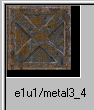
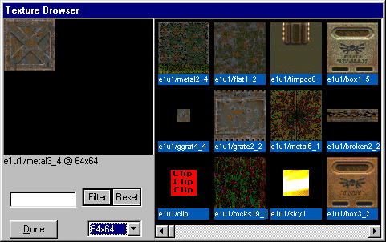
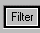
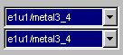

|
|
|---|
Texture Workspace Window This displays the current texture in use.
 Browse Button This will open up a texture browser window.
Browse Button This will open up a texture browser window.

Filter This will activate the ability to filter out textures by groups.
Reset This will reset to the original filter settings.
 Size Drop Down Menu This will adjust the display size of the textures in the "Texture Browser".
Size Drop Down Menu This will adjust the display size of the textures in the "Texture Browser".
Upper Bar This will open a drop down display of all available textures.
Lower Bar This will open a drop down display of all used textures.